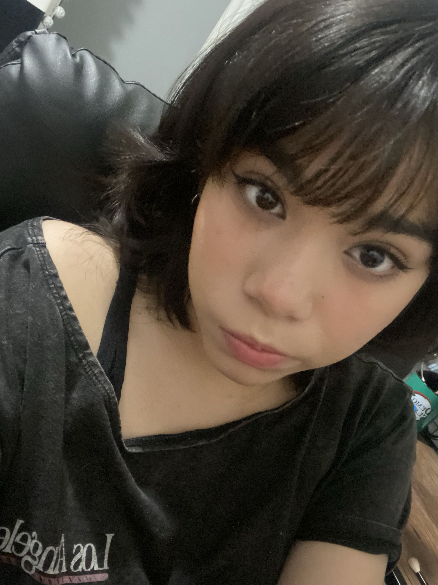

I'm 20 years old, and I'm starting out on a path toward becoming a tattoo artist. Right now I'm in the early stages of learning the craft, focusing on designing tattoos and developing my own style. Every sketch is a chance to practice line work, composition, and how a design will look on skin. I'm excited about the idea of creating art that people wear with them for life. Tattooing combines drawing, storytelling, and working closely with people, and I want to get better at all of it. My goal is to build a solid foundation in design now so I'm ready to start tattooing professionally in the future.
